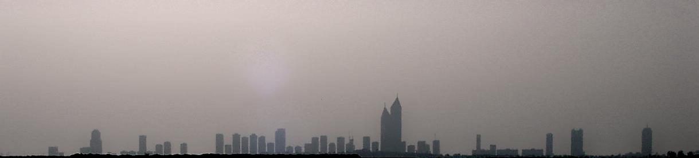

25 June 2001

Well, nothing as dramatic as that. Actually, all that happened is my UK working holidaymaker visa ran out. Somehow, two whole years have passed since I arrived in the UK. Very hard to believe! So I've left the UK and come back to Dubai. I still had a residence visa (that needed cancelling) for the United Arab Emirates so it seemed a nice place to go. It also means I am pretty close to the UK if I need to pop back for meetings or what have you.
Mike and Brenda left in May as well. Brenda's visa ran out the same day as mine, so they are off doing a bit of travelling before hopefully emigrating to Canada. Everyone else I know in the UK seems to be on Ancestral right of abode visas which entitles them to stay longer. (Lucky buggers!)
I managed to get through the whole importing process without too much bother. It really seemed painful at the time though. I mean, it was just delay after delay.
Because my car was built for the middle-east market, I had to get a special test done. The same sort of test they apply to newly built kit cars and stuff. It flew through that, although I did have to fork out £1400 on new headlights. (hang on, that is why I am broke!)
How does that saying go? If it has wheels or a skirt, you can't afford it. (Oops. Did I just lose my entire female audience?)
I don't think I'd recommend importing a car quite the way I have done it. That said, it sounds like a lot of people import vehicles from the Emirates. I was quite surprised when I found that out! Sure, I saved a lot of money when you compare it to the cost of a Boxster here in the UK. So perhaps it wasn't such a bad deal. I'm sure I'll feel happier about it once the sting on my wallet has worn off a bit. I guess I'll also be happier about it once I'm back in the UK driving the thing. Right now though I'm missing it like crazy!
I think the Boxster has just about gotten over the shock of living in such a wet country. The hard top had some leaks to start with, but it all seems tickety-boo now.
Driving around London is quite different to Dubai or NZ. There are some totally mental rules, like the gridlock inducing give way rules at some intersections. But on the whole, drivers here seem to be pretty considerate, and have that sort of mentality that you need to be able to survive in such a big city with so much traffic. I'm not sure driving is the smart thing to do either. It's okay if you know where you are going, but if I had a dollar for every time I was lost (and frustrated) while driving in London trying to find somewhere, I'd have a few dollars. (Enough for lunch, probably not for dinner)
Speed cameras are abundant too. It might be just around the London area, but the only real drive I've done out of London yet is to Norwich and Cheltenham, and I didn't see many on either of those trips. They are pretty easy to spot, and they work a lot differently to the ones at home.
I'm guessing that they must still have a radar device in them, but there are white lines on the road, and the camera takes two photos. Then, based on the distance you've moved between photos, they can figure out how fast you were travelling. Everyone travels about 10 miles an hour faster than the limit, and the cameras don't seem to go off, so who knows what sort of tolerance they have built in.
That said, I think I got busted the other day. Not by a speed camera though. I spotted some guys on an overpass and think they had one of those blooming laser guns. I was late for a meeting and travelling quicker than I should have because I'd taken the wrong turnoff like the twit I am. Oh well. I kicked myself for a few seconds (most of the day actually), but will just have to wait to see what the damage is. It wasn't too quick, but I bet I get a shock. Silly-silly...
Enough about cars. They suck.
Tell you what. Even with this so-called recession that is going on now, there are still a decent number of opportunities around. I'd thought that with the downturn in the US and Europe's economies that everything would be a lot quieter, but I'm still getting a lot of bites. So if anyone out there is tempted on doing a spot of contracting, it still looks quite good.
As usual, I really don't know what I've got planned for the future. I've got a few choices, so it'll be a bit of pot luck but mostly just going with gut feeling on whatever opportunity seems right at the time.
I'm still mulling over the Uni idea. Not so sure how serious I am though. Perhaps I'm kidding myself, but I love learning. (Just don't like homework) Mmmm... Perhaps I'll just keep working for a little while yet. I'm just thinking that a degree would help me in case I want to try and apply for a green card in the States. I don't think having just experience cuts it there. They sort of expect a degree as a minimum. Which means, unless I get incredibly lucky in the lottery, I don't have much chance of going there to work. (Their loss)
I still have plans for world domination, but this working for yourself lark is pretty tough sometimes.
The Palestinian conflict is pretty huge here. I guess with the news the way it is, it is pretty big elsewhere in the world too. I can't say I understand it any better than I understand the Ireland conflict. It seems a bit mystifying to me, but there it is. I guess I just hope that things can get resolved without too much delay. Or at least that it doesn't escalate any more.
You can't avoid talking about it here. And typically, all you will hear is the Palestian side of view. Which is quite different to that portrayed by CNN. (My main source of news, but only because I don't have access to the BEEB channels)
Locals and other Arab nationalities feel quite strongly about what is happening in Israel. But sometimes I find it as difficult to understand as the Ireland situation. It just doesn't seem to make any sense.
On an aside, I saw that video of all the wedding guests in Israel who fell through the collapsing floor. That must be the scariest footage I've seen in a long while.
It's hot. And wet! Which is great if you're with a lady, but ain't no good if you're in the jungle
Okay, it's not wet (but it is very humid). Thanks Euan for fixing my quote. :-) I think I only saw Good morning Vietnam the once, so I excuse myself for mis-quoting.
It is bloody hot here though. It's already reaching the low 40s during the day, and summer is still a month or two away! It is still quite cool some nights, but that is almost becoming the exception.
You can still go to the beach though. Liezl and I went last Friday. It was hot, but not unbearably so. Also, something I never really noticed until just recently is how cool the sand is compared to back home. I remember the sand being so hot you couldn't stand still on it. Maybe that isn't normal, but perhaps it shows how much more energy the sun has back home.
While I admire the Arab race for their unequalled hospitality. They also have some pretty damn strict laws. If you are unlucky enough to be tried by a Shariah court, make sure it isn't for acting in porn films. (Or for that matter having sex outside of marriage, selling drugs or performing sorcery)
While the following newspaper clipping is about an execution in Tehran, similar executions are carried out in this country.
Excerpt from the local paper (courtesy Gulf News)
Overall it is a pretty safe country though. It's just I think
there are elements about it that are a little hard to trust. At
least if I was locked up in NZ, I'd feel pretty secure that as long
as I haven't actually done anything I'll be alright. At worst it'd
be a couple of nights in a cell and then I'll be let go. But here.
Boy!
I've heard stories about three people who got drunk during Ramadan
and were being a bit silly in a cab. The cab driver called the
Police and they spent at least 6 months in prison. (I don't even
know if they got out yet)
It's just a vague feeling of unease though. It still rates pretty highly on the Dave-o-meter of places to stay!
Sarita and Hamish came over from the UK for a bit of a break. I'm not sure, but I think the sole purpose of the trip was to go back to the UK with envy-inducing tans. They certainly spent enough time on the beach lapping up the sun!
Hamish and Sarita enjoying a quick dip just before being rushed
to hospital for sunstroke (joke!)
While they were here, we all went up to Umm Al Quain gun club to blow away some targets. Sarita ended up stealing the glory getting a bull's-eye with her first shot of the pistol. Although, Liezl displayed her 'Abu Sayyaf'-like qualities with a bit of incredibly sharp shooting. (Remind me not to piss her off if she is packing heat)
Charlie's angels wannabes at the Umm Al Quain gun club. (Dig the
AK-47 Sarita!)
We started off shooting outside in the heat on the 200m range. We fired a couple magazines of a 7.62mm FAL. It is pretty similar to the L1A1 SLR that the Airforce had. Would have had a go with the AK-47, but the firing pin was broken. (Did you do that Yousef?)
After that, we went inside onto the 12m range to shot the 9mm pistols. I don't know pistols, so I couldn't tell you what these ones were. I had wanted to shoot the 50cal Desert Eagle. But since it is made in Israel, it has been put away while the current conflict is on. (Shame)
Our dead targets after we'd blown them away!
We took the Echo-beast (the hire-car I was currently destroying) out to Jebel Hafeet. It is a mountain (the arabic word jebel means mountain) in the Al-Ain Emirate, that has a three lane road all the way to the top. An English diver I met once on my dive course told me about the place, and Stu and I hunted it down in March 2000. This was the third time I've been back.
Unfortunately the weather wasn't very clear. I'm not sure what it was. Perhaps there was a Shamaal (windy storm) that had blown up the sand or there was just a lot of mist in the air, but visibility wasn't very good. Still, it's an impressive place. This big mountain is the only non flat feature within sight. You can see the completely flat horizon all around.
We didn't manage to get there before the sun set (if only I'd had the Porsche), but the view was still pretty reasonable. We managed to catch some of the fading light to get a bit of a look around, but it did get dark very quickly.
Liezl and I at the top of Jebel Hafeet (in Al Ain)
I'm quite enjoying this telecommute thing. It is nice being in a job where you can work from anywhere in the world. Working for yourself is pretty tough though.
I'm seriously thinking about permanent roles now. I've had a bit of a shock on this current project. It quickly grew to enormous proportions, far in excess of anything that I predicted. Just the way that the deliverables worked, I ended up going for five months without any income (and quite a few outgoings) so managed to chew through all of my savings. I'm not sure I want to go through the same sort of thing again. At least, not unless there was a possibility of a very juicy return. But to do it for not even standard rates seems ridiculous.
Even so, it's been damn good experience, and I've managed to grow because of it. I guess it is the old saying. "What doesn't kill me..."
I'm back in the UK sometime late July or early August. I don't really have any trip plans for the rest of the year. I'm hoping to do a little touring around Christmas time. In January I am off to Canada to go snowboarding with "The boyz". I was thinking about coming back to NZ in February, but it looks like it might be June instead. My cousin Neil is getting married to his girlfriend Dalas, so I will have to come back for that. (Perhaps it is true, I only come back for weddings...)
It's not bad timing actually, as it is my 30th birthday then too. Time for a party! :-)
Catch you next travelogue!